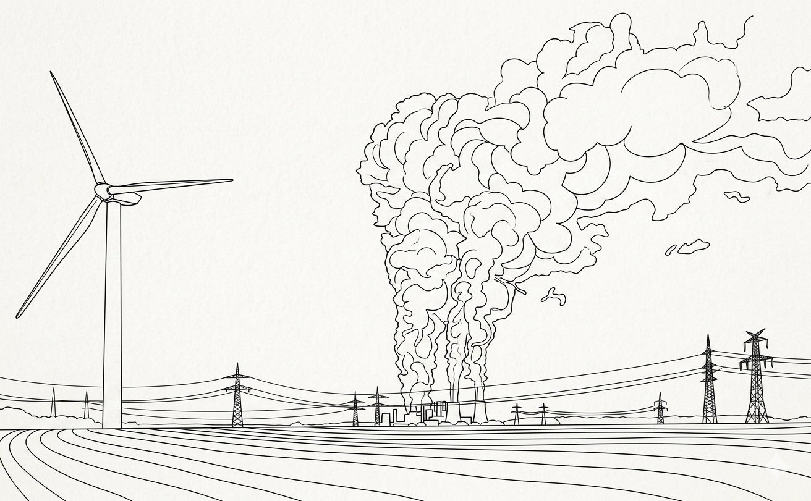

Responsabilidad Social Corporativa (RSC)
SA01. ¿Huella Empresarial? Responsabilidad Social Corporativa y Stakeholders.
- Responsabilidad Social Corporativa (RSC) y su impacto en los grupos de interés o stakeholders.
- Huella empresarial: el impacto de la actividad económica y empresarial en la sociedad.
 |
|
¿Es el beneficio económico el único fin de una empresa? Imagina una empresa que genera millones en beneficios pero agota los recursos hídricos de su comunidad o ignora los derechos de sus trabajadores. En este proyecto, os convertiréis en consultores éticos para analizar la Huella Empresarial. No solo estudiaremos qué es la RSC, sino cómo las decisiones de una organización afectan a personas reales (Stakeholders) y al planeta. |
|
| msolis | IA Gemini (2026). Licencia Creative Commons (CC BY-SA). |
¿Qué vamos a investigar y crear?
- Contenido: RSC "UD01. Emprendimiento y empresariado", durante esta SdA seguiremos este camino:
- Exploración: análisis de la evolución de la RSC y la teoría de los Stakeholders.
- Investigación: estudio de un caso real de una empresa (éxito o fracaso ético).
- Debate y Reflexión: evaluación crítica de la ética empresarial en el siglo XXI.
¿Cómo serás evaluado?
El aprendizaje se valorará de forma continua a través de:
- Capacidad de análisis: demostrada en los cuestionarios de reflexión.
- Competencia Digital: reflejada en la calidad y claridad de tu infografía (Canva).
- Espíritu crítico: participación en los debates, reflexión (Google Forms) y autoevaluación (Moodle).